This VI imlements the framework and scheduler for your robotics program. It should not be necessary to modify the framework. You are expected to add your code to the VIs called from Robot Main, the ones located in the Team Code within the project.

This VI is called each time a disabled packet is received from the DS. It is often used to prepare for the next robot mode, to calibrate sensors, etc.
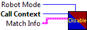

This global VI can contain as many global variables as you need. Place a control on the panel, give it a good name. To read or write to it from a VI, drag the icon to the diagram of that VI. You can also drag from the project. Click on the node to change which global you access. You shouldn't have multiple locations writing to a global or it will cause a race-condition.


This VI is called just before exiting. It is expected to close I/O refnum, save collected data, etc.


This VI is called for each TeleOp packet received from the DS where the robot is not disabled. It is often used to read from the joysticks and update I/O or to update setpoints for timed control loops. It should complete and return within 20 milliseconds or it may miss DS packets.
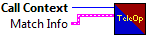


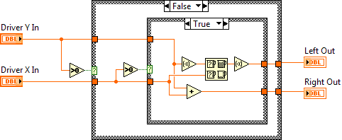
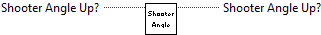
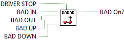

This VI is called when test mode begins, and will automatically be terminated when it ends. You can add manual or automatic tests and invoke them from the dashboard.


This VI runs in parallel to other tasks. It can contain as many user-defined periodic loops as you need. These can carry out PID or other sorts of timed response.


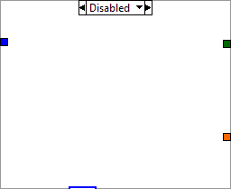
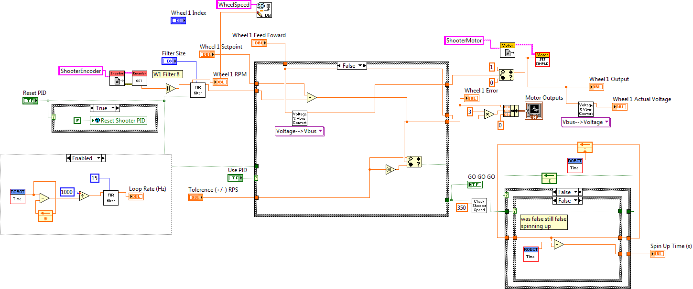
Returns the current time reading of the clock on the FPGA image on the CompactRIO device.
The <b>TimeStamp</b> parameter of the Interrupt Wait VI and the Direct Memory Access (DMA) stream both return the time on the clock.
This software is licensed. Open the labview\readme\WPI Robotics Library Open Source License.txt file for more information.


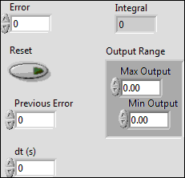
Specifies the output value or set-point for the motor controller.
If you use a Jaguar or Victor motor controller connected to PWM, the scaled value can range from -1.0 to 1.0.
If you use a CAN Jaguar, the scale and the units depend on the mode the Jaguar is in. In Percent VBus mode, the range is the same as the PWM interface. In Voltage, Current, Speed, and Position modes, the Output is specified in engineering units (Volts, Amps, Rotations/Minute, and Rotations respectively).
The output value can be modified by custom scaling if you specify the TransformRef VI reference in the Open VI. Use this transform if you need to apply a non-linear transformation to the motor control signal to compensate for the characteristics of the motor.
This software is licensed. Open the labview\readme\WPI Robotics Library Open Source License.txt file for more information.
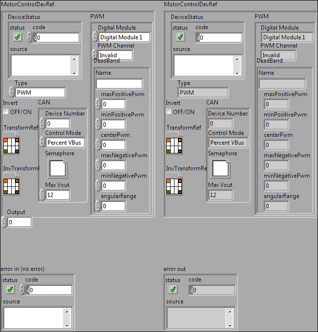

Called before other user functions, this VI is expected to open initial I/O refnums, load in file data, and do all program initialization. Notice that the error out terminal is simply used for data flow. Wiring it to other structures or subVIs ensures that this VI runs first.


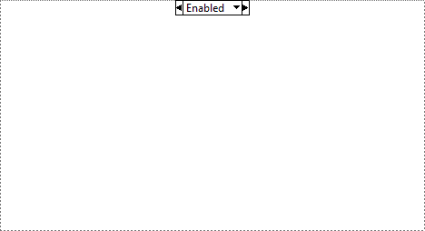
This VI is called when autonomous begins, and will automatically be terminated when autonomous ends. You can carry out timed or sensor driven robot movement independently without needing to return to the caller.


This VI is called when autonomous begins, and will automatically be terminated when autonomous ends. You can carry out timed or sensor driven robot movement independently without needing to return to the caller.
This VI is called when autonomous begins, and will automatically be terminated when autonomous ends. You can carry out timed or sensor driven robot movement independently without needing to return to the caller.
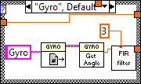
This VI is called when autonomous begins, and will automatically be terminated when autonomous ends. You can carry out timed or sensor driven robot movement independently without needing to return to the caller.
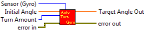